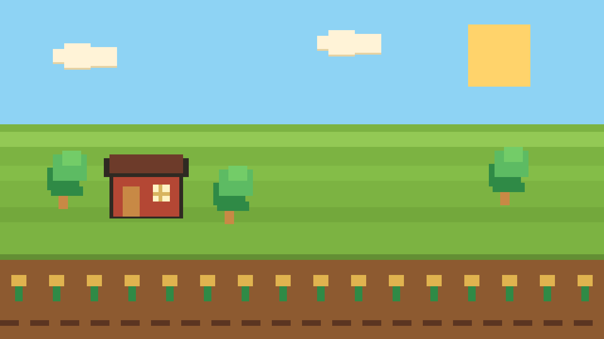
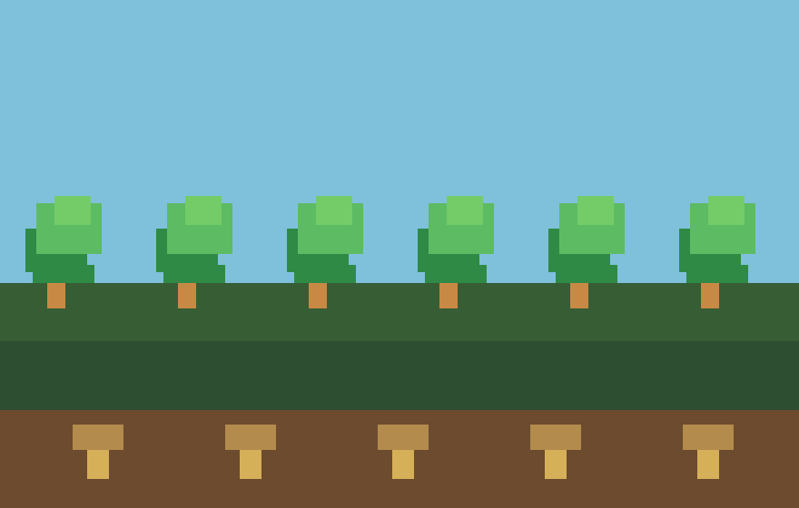
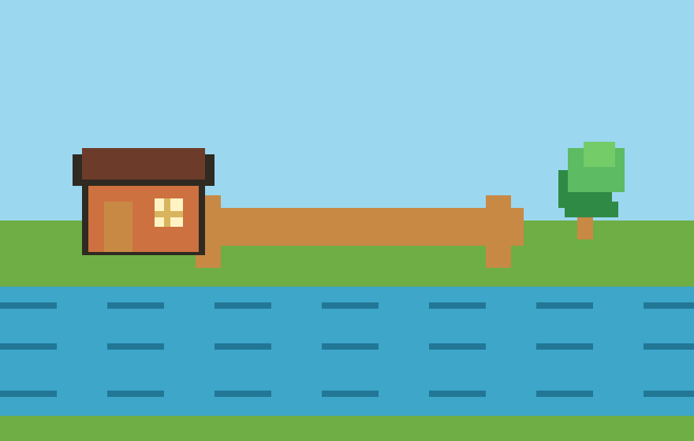
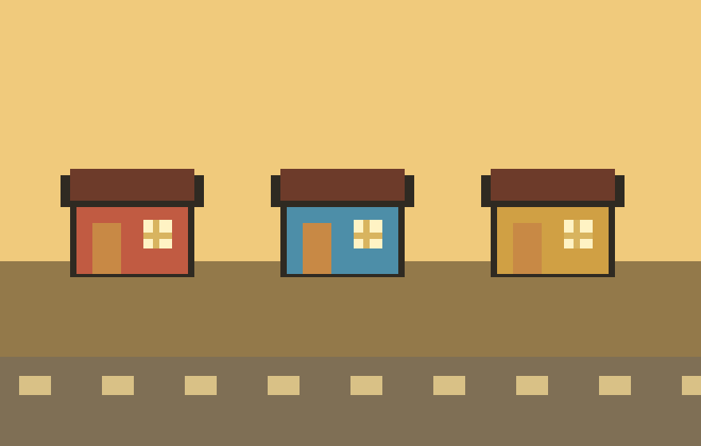

农场节奏
从清晨浇水到傍晚整理背包，用紧凑区块呈现日常循环的轻松感。
A gentle farming-inspired fan page
这是一个 Stardew Valley 氛围灵感站：安静的农场、温暖的小镇、钓鱼、采集和一点点夜晚灯火。 本项目仅用于学习与展示，不代表游戏官方。

Welcome to the valley
这份页面参考的是“舒适、清晰、带有乡村游戏气息”的公开主页结构，而不是复刻任何官方源代码或资产。 你可以把它当作一个静态站模板：替换文案、替换链接、继续扩展更多 fan-made 内容。
页面中的图像均由本项目本地生成，用来表达农场、河流、森林和小镇的氛围。 所有涉及 Stardew Valley 的名称都只用于说明灵感来源。
Original scenes



Things to love
从清晨浇水到傍晚整理背包，用紧凑区块呈现日常循环的轻松感。
用简洁卡片表达人物、节日和社区氛围，适合作为后续内容入口。
森林、矿洞、海边和河流可以扩展为独立页面或图鉴模块。
购买与了解链接统一指向官方页面，避免混淆来源。
Play the real game
Project notes
包含首页、媒体轮播、特色区、正版入口和明确的非官方声明。
生成像素风农场、森林、河流、小镇四张 PNG，用于站点视觉展示。